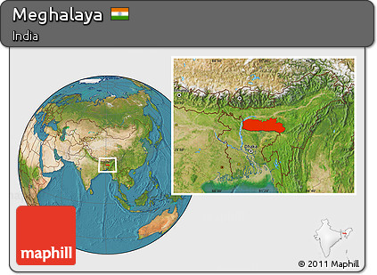
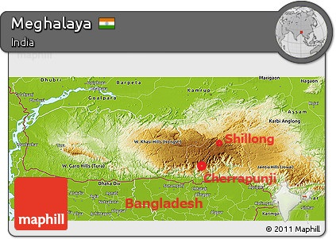

2017年の夏、インド北東部のメガラヤ州に一人で行った。
当時、博士課程の3年目で、アジアモンスーン高気圧の研究をしていた。その関連で、アジアモンスーンに伴う南アジアの夏季の降水についても勉強をした。教科書や論文を読んで、観測データとモデルデータを入手して解析をして、さまざまな条件での降水量の分布を描画しているうち、世界で一番多く雨が降るといわれる場所を見てみたくなった。
|  Satellite Location Map of Meghalaya |
 Satellite 3D Map of Cherrapunji |
インド北東部のメガラヤ州は、バングラデシュの北、アッサム州の南に位置している。州の名前はサンスクリット語で「雲の住処」を意味する。州の大部分が標高1000m以上に位置しており、バングラデシュとの国境付近は南側の低地との間で切り立った断崖のような地形をしている。ベンガル湾から吹き込む夏季アジアモンスーンの風がこの標高差によって上昇し雲を作ることで、世界でも有数の多量の降水が発生する。
州都シロンに空港があり、国内線でコルカタから行くことができる。南部の丘陵地には小さな町が点在しており、独特な風景から多くの場所が観光地として知られている。年間降水量世界一の記録で知られる町、チェラプンジは、南端の斜面付近に位置する。
Designed by CSS.Design Sample